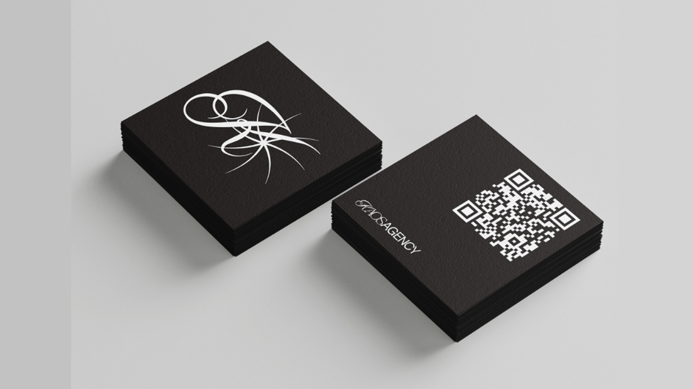
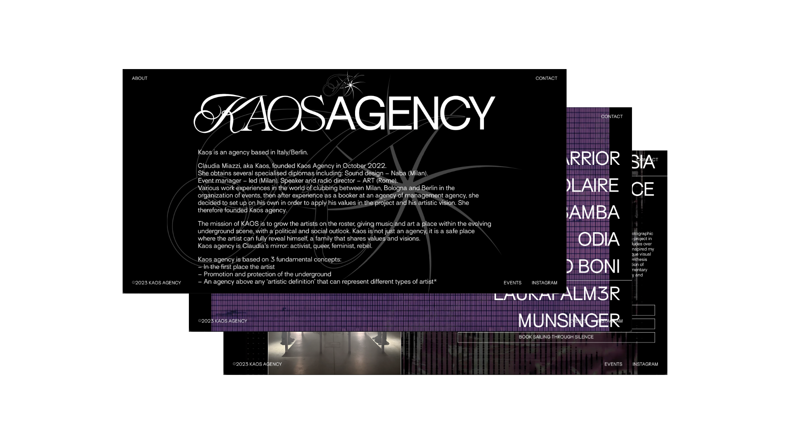
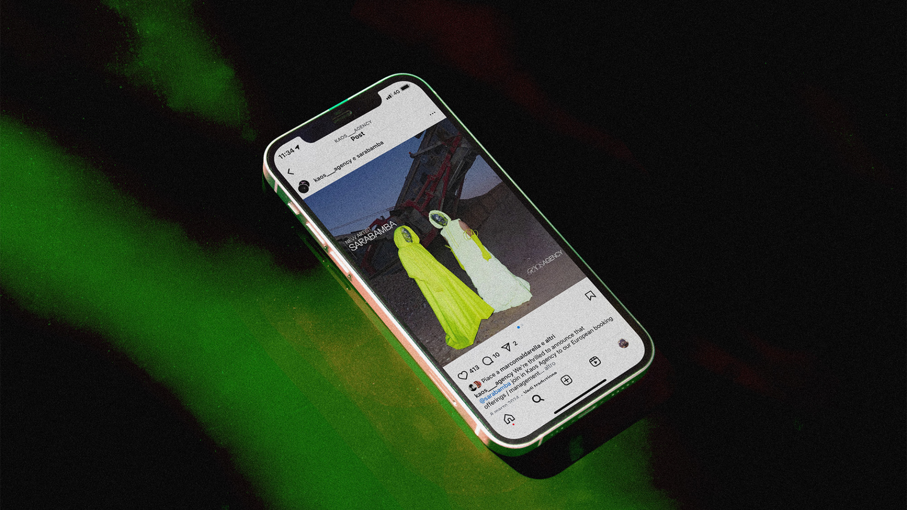

Kaos is a music agency based in Italy
and Berlin.
Kaos focuses on the underground
electronic scene.



Redesigning the agency’s logo and adapting it for both print and web.
Designing the website and keeping it updated with new artists.
Developing a social media communication plan and creating content.